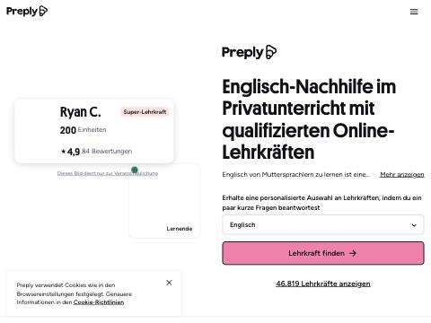
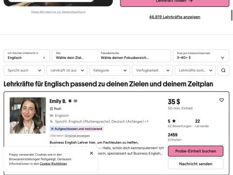
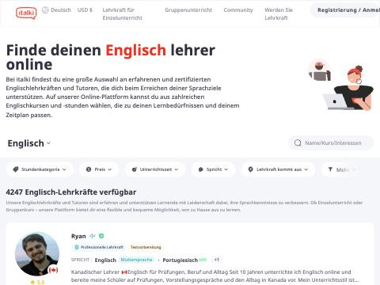
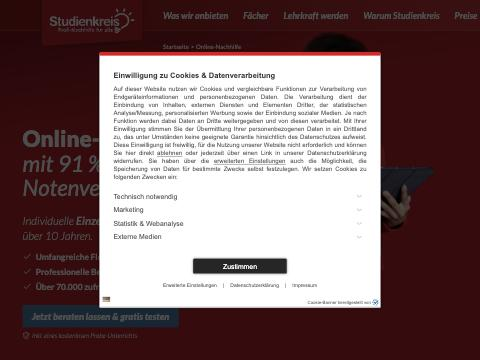
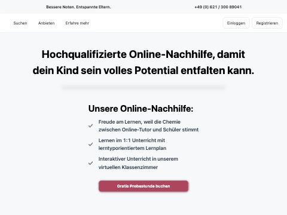

Анализ конкурентов · октябрь 2026
Рынок разбит на три типа игроков: международные маркетплейсы репетиторов, немецкие школы-подписки с продажей через менеджера и локальные Nachhilfe-сервисы для школьников. Данные собраны прямо с их сайтов, скрины приложены.
Те же, что и Ollinter: каталог специалистов, человек сам выбирает, платформа берёт комиссию. Это главный ориентир для дизайна, карточек и воронки.

Preply: анкета вместо каталога на первом экране

Так выглядит лист выдачи с фильтрами

italki: 4 247 преподавателей, цена от 5 $
Не каталог, а пакет: бесплатный пробный урок, звонок менеджера, подписка на месяцы вперёд. Здесь крутятся основные рекламные бюджеты Германии.
GoStudent: цена падает с объёмом подписки
Lingoda: языковая школа с живыми уроками 24/7
Эти игроки держат немецкую семантику: «Nachhilfe», «Notenverbesserung», «Probestunde». Именно по этим словам ищут в Германии, и здесь дорогой аукцион.

Studienkreis: «91 % улучшения оценок» в заголовке

TutorSpace: гарантия оценки и отбор 15 % преподавателей
Что с этим делать Ollinter